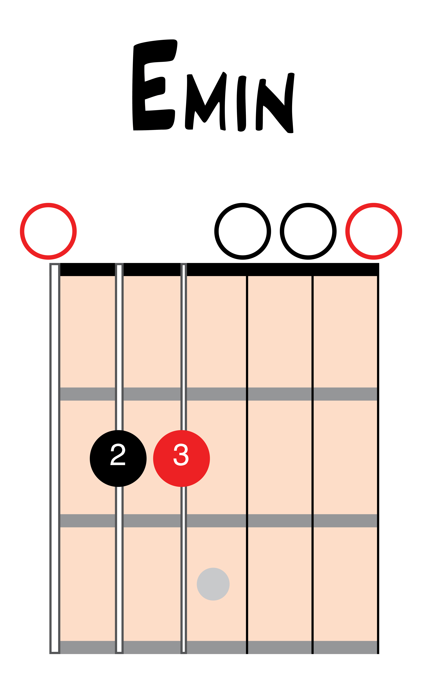

Notation
Types of notation
Guitar music is usually notated in one of three ways: Chord Diagrams, Tablature (TAB), and Standard Notation. Each method of notation is useful on its own and when combined with the other methods.
Tablature
Tablature, or “tab”, is one of the most common ways to notate guitar music. More on tabs later in this section.
Standard notation
Standard notation is the most common way to write music for most instruments. While some guitar players never learn to read standard notation, it is extremely valuable to learn (at the very least) the basics. More on standard notation in Part 2 of this book.
Chord diagrams
For our purposes, a chord is when more than one note or string is played at the same time. Chord diagrams are a common and convenient way to notate chord shapes. Chord diagrams are easier to decipher than staff or TAB notation due to their visual layout.
A chord diagram is an image of a guitar neck with six vertical lines representing the strings and horizontal lines representing the frets. The left-most vertical line is the sixth string and the right-most vertical line is the first string. Solid dots show where to fret each string. Open circles above a string indicate open strings while an “x” above a string means do not play that string. In this book, the left-hand fingering is shown within the fretted dots. You will likely come across other methods of notating fingering such as numbers under each fretted string. If a chord is not played in the open position, a number (or roman numeral) indicates at which position to play it. Above each chord diagram is the chord name.


Back: Hand position Next: Chords to get you started